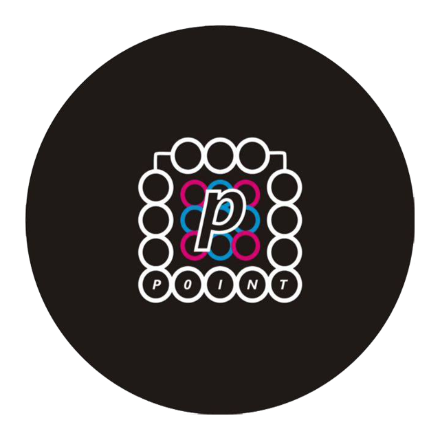

Production
Point Production
(You And I at The Holay Space)

Film ini bukan merupakan film sedih, tapi cinema verite. Bertutur secara linear (3 babak) namun multiplot dengan tidak terlalu banyak figur jukstaposisi. Bercerita mengenai dampak kerusuhan 1998 terhadap keluarga Hartanto Soedibjo yang kemudian menyisakan sebuah lubang besar dalam kehidupan mereka selama bertahun-tahun.
| Produser | Aryo Dwipanggo |
| Line Produser | Shabira Almaas Yanaayuri |
| Sutradara | Athory Toyyiban Malik |
| Penulis Naskah | Agustin Primastuti |
| Peneliti | Purwoko Ajie |
| Prod. Manager | Lita Andiyani |
| Unit Logistik | Erika Dyah |
| Unit Location | Reissa Permatasari Ima Riyanti |
| Unit Transportation | Fatimah Liliani |
| Accounting | Meylinda Wulan Sari |
| Koor Talent | Madila Tsaniya Santi Suhartatik |
| Technical Director | Ahmad Nur Chafid |
| Assistant Director 1 | Hassan Bahri A. |
| Assistant Director 2 | Anastasya Luh P. |
| Sound Director | Muhammad Hamdani |
| Sound Crew | Miftah Faiz B. |
| Director Of Photo | Bonaventura K. |
| Camera Person | Muhammad Aryodhia |
| Assitant Camera | Out Sourch |
| Gaffer | Diego Awawy W. |
| Lighting Crew | Adzika Pradana Wildan (TVF 2016) Out Sourch |
| Art Director | Veronica Wening |
| Prop. Master | Awan Tamara P. |
| Assistant Prop. | Ajib (UMS) Out Sourch |
| Wardrobe | Ericha Christiani P. |
| Assistant Wardrobe | Out Sourch |
| Set Decoration | Ayudha Eka R. |
| Assistant Set Décor | Yoshua (TVF 2017) Out Sourch |
| Make Up Artist | Ahmad Pujiaman |
| Assistant MUA | Faisal (TVF 2016) Farah (Batik 2015) |
| Editor | Sutrisno Wahyu Sri Palupi N |
| Cleapper | Purwoko Ajie |
| Script-Con | Celine (TVF 2016) |
| Runner | Out Sourch |